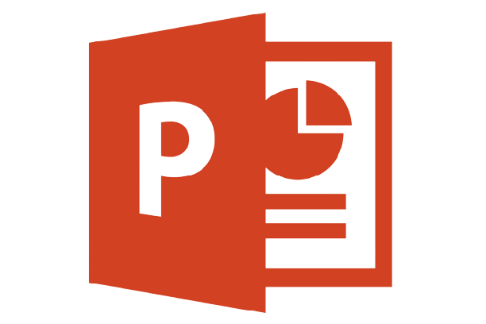

Étudiant Bachelor R&T
IUT Béziers
yohann.ansinelli.pro@gmail.com
Compétences SAE14
Gestion de Projet
Savoir se présenter
Codage HTML et CSS
Anglais
Cette SAE avait pour but de faire un premier pas avec le monde professionnel avec la création de son compte LinkedIn personnel. Nous avons aussi eu un premier rapprochement avec le portfolio qui sera la pièce maîtresse durant ces 3 années de Bachelor. Par exemple vous voici sur mon portfolio de présentation , il en existe un autre nommé portfolio de compétence qui sert à référencier toute les compétences acquises durant mon BUT.
Durant cette SAE nous avons été amené à créer un profil LinkedIn en français et en anglais pour faire un premier pas dans le monde professionnel. Vous pouvez d'ailleurs retrouver le mien ci-dessous.
Profil LinkedIn Ansinelli YohannSur ce projet de profil LinkedIn nous avions eu comme objectif de contacter des professionnels dans la même branche d'étude que nous. Pour cela nous avions du préparer des mails ainsi que créer notre signature.
Durant la SAE nous avions du réaliser notre portfolio de présentation dont celui là qui est le mien , mais nous avions du aussi juger des portfolios d'autres étudiants et donner notre avis pour faire un bon portfolio. Vous pouvez retrouver ci-dessous notre diaporama pour réaliser un bon portfolio , pour avoir une meilleur qualité il est préférable de l'ouvrir avec powerpoint.
Télécharger Portfolio de PrésentationNous avions du aussi réaliser notre portfolio de compétence qui se trouve sur le moodle de notre IUT et qui a pour objectif de mettre en avant les compétences acquises au long des projets et des modules.